code

Elke Windschitl
Environmental Data Scientist


.teal-bg-left { background-color: $dark-teal; padding-top: 20px; padding-bottom: 20px; padding-right: 20px; padding-left: 20px; border-radius: 0 25px 25px 0; position: relative; z-index: 3; display: flex; flex-direction: column; justify-content: center; align-items: center; margin-right: 40px; margin-top: 20px; transform: translateX(-100%); /* Start off-screen to the left / transition: transform 0.2s, opacity 0.2s; / Add smooth transitions for both transform and opacity */ }
.teal-bg-left.slide-in { transform: translateX(0%); /* Move to the original position / opacity: 1; / Fade in */ }
.teal-bg-left p { margin: 0 0; /* Add margin to separate the paragraphs / display: block; / Ensure the paragraphs display as block elements */ }
.custom-circle-headshot { position: relative; padding-top: 45px; left: 23%; z-index: 4; /* Place the image above the background / transition: transform 0.2s; / Add a smooth transition effect */ }
.custom-circle-headshot:hover { transform: scale(1.1); /* Increase the size on hover (1.1 times the original size) */ }
@media (min-width: 768px) { .custom-circle-headshot { left: 30%; padding-top: 20px; } }
.clickable-image { margin-bottom: 15px; z-index: 4; transition: transform 0.2s; }
.clickable-image:hover { transform: scale(1.08); }
@media (max-width: 768px) { .clickable-image { max-width: 100%; /* Make the image width 100% of its container / max-height: auto; / Allow the image to scale proportionally */ } }
.modal { display: none; position: fixed; z-index: 4; padding: 100px; left: 0; top: 0; width: 100%; height: 100%; background-color: rgba(0, 0, 0, 0.9); text-align: center; margin-top: 50px; }
.close { position: absolute; top: 10px; right: 10px; color: white; font-size: 30px; cursor: pointer; }
.modal-content { max-width: 50%; /* Adjust this value to make the modal narrower / max-height: 50%; / Adjust this value to make the modal shorter */ margin: 0 auto; }
.teal-bg-right { background-color: $dark-teal; padding-top: 20px; padding-bottom: 20px; padding-right: 20px; padding-left: 20px; border-radius: 25px 0 0 25px; position: relative; z-index: 3; display: flex; justify-content: center; align-items: center; margin-left: 40px; margin-top: 0px; margin-bottom: 40px; transform: translateX(100%); /* Start off-screen to the left / transition: transform 0.2s, opacity 0.2s; / Add smooth transitions for both transform and opacity */ }
@media (min-width: 768px) { .teal-bg-right { margin-top: 135px; margin-left: 0;/* Apply margin only on desktop screens */ margin-bottom: 10px; } }
.teal-bg-right.slide-in { transform: translateX(0%); /* Move to the original position / opacity: 1; / Fade in */ }
.teal-bg { background-color: $dark-teal; padding-top: 20px; padding-bottom: 20px; padding-right: 20px; padding-left: 20px; border-radius: 25px; margin-top: 30px; }
.teal-bg2 { background-color: $dark-teal; border-radius: 15px; }
.gray-bg { background-color: $light-gray; padding-left: 20px; border-radius: 25px; }
.custom-banner { width: 100%; position: relative; top: -100px; left: 0; z-index: -1; padding: 0; margin: 0; }
.custom-footer { width: 100%; position: relative; padding-bottom: 0; margin-bottom: 0; z-index: 2; }
.footer-container { margin-bottom: -35px; /* Adjust this value to match the image height */ }
@media (max-width: 768px) { .footer-container { margin-bottom: -20px; } }
.button-container { display: flex; justify-content: center; align-items: center; margin-top: 25px; }
.light-teal-button { background-color: $light-gray; color: $light-teal; border: 2px solid $light-teal; padding: 10px 20px; border-radius: 5px; text-align: center; text-decoration: none; display: inline-block; font-size: 16px; cursor: pointer; margin-right: 25px; margin-left: 25px; }
.light-teal-button:hover { background-color: $light-teal; /* Change the fill color on hover / color: $light-gray; / Change the text color on hover */ }
@media (max-width: 768px) { .button-container { flex-direction: column; /* Stack buttons vertically on mobile / text-align: center; / Center button text on mobile */ }
.light-teal-button { margin: 10px 0; } }
.menu { position: fixed; top: 50%; right: 10px; transform: translateY(-90%); background-color: $dark-teal; padding: 10px; border: 1px solid $dark-teal; border-radius: 5px; box-shadow: 0 2px 4px rgba(0, 0, 0, 0.2); z-index: 4; }
.menu li { margin: 5px 0; /* Adjust spacing between items */ list-style-type: none; }
.menu a { text-decoration: none; color: $light-gray }
@media (max-width: 768px) { .menu { display: none; /* Hide the menu completely on mobile */ } }
.custom-list { list-style-type: disc; line-height: 1.2; padding-top: 0; padding-right: 10px; margin-top: 0; font-size: 14px; }
.custom-list li { margin-bottom: 5px; padding-top: 0; margin-top: 0; font-size: 14px; }